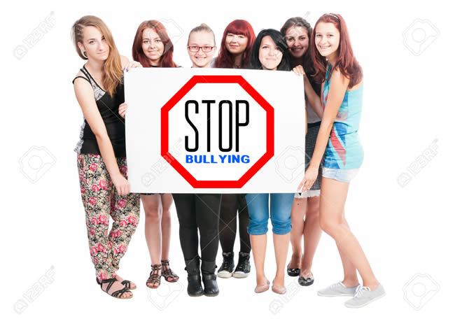

What can we do to stop bullying?
- Intervene when children are young.
- Teach bullying prevention strategies to all children.
- Take bullying seriously.
- Encourage empathy.
- Teach by example.
- Help children critically evaluate media violence.
- Provide opportunities for children to learn and practice the qualities and skills that can protect them from bullying.
- Encourage children to talk about and report bullying.
